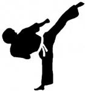

Основною метою гуртка є формування у вихованців установки на здоровий спосіб життя, виховання цілеспрямованості, вольових якостей, самостійності, психологічної стійкості, почуття відповідальності. На заняттях гуртка вихованці поступово та послідовно розширюють теоретичні знання та практичні уміння і навички. У вихованців формується уявлення про таеквон-до, як вид спорту, що розвиває фізичні характеристики людини, розвивається спритність, швидкість реакції, зосередженість, зібраність.
Керівник Дем'янчук Петро Миколайович
